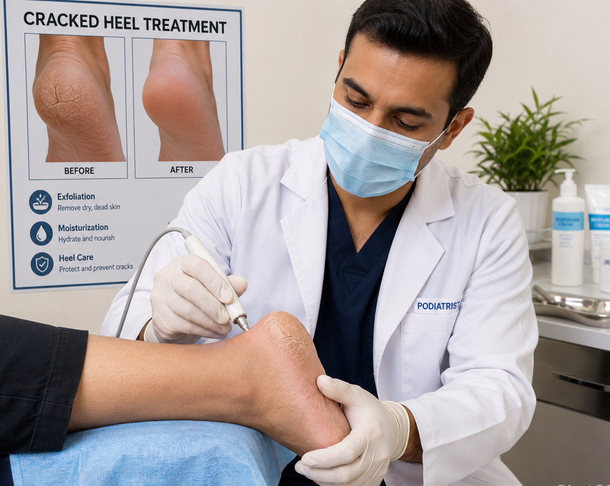

Routine Foot Care
Professional foot maintenance to keep your feet healthy and comfortable.
Nail Care
Treatment for thickened, damaged or painful nails.
Corn & Callus Treatment
Relief from painful corns and hard skin build-up.
Diabetic Foot Care
Preventative foot care and monitoring for diabetic patients.
Ingrown Toenail Care
Professional ingrown toenail care, focusing on safe, gentle treatment to relieve pain and reduce inflammation.

Cracked Heel Treatment
Cracked heel treatment to soften dry skin, relieve discomfort, and restore smooth, healthy feet.
Foot Health Advice
Guidance on footwear, hygiene and long-term foot care.